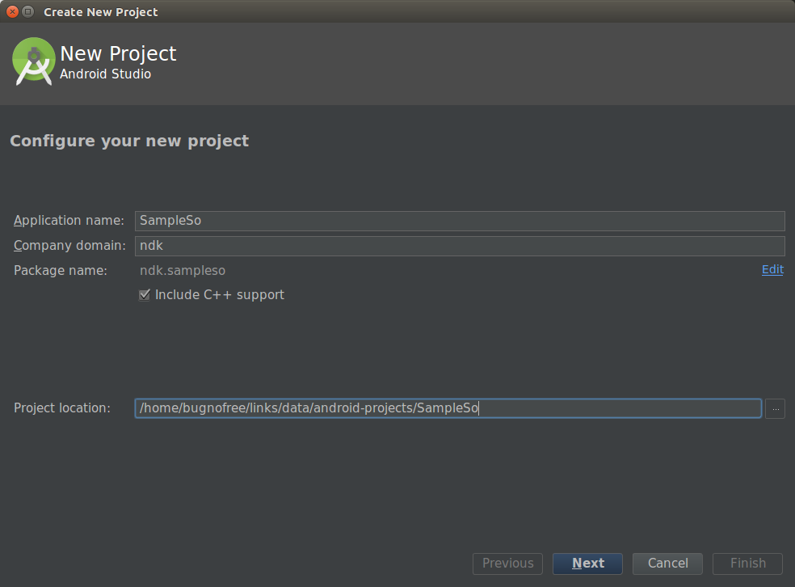
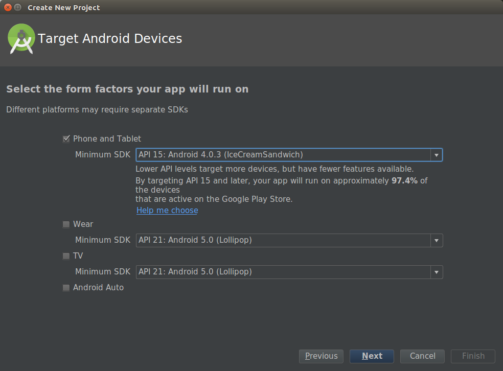
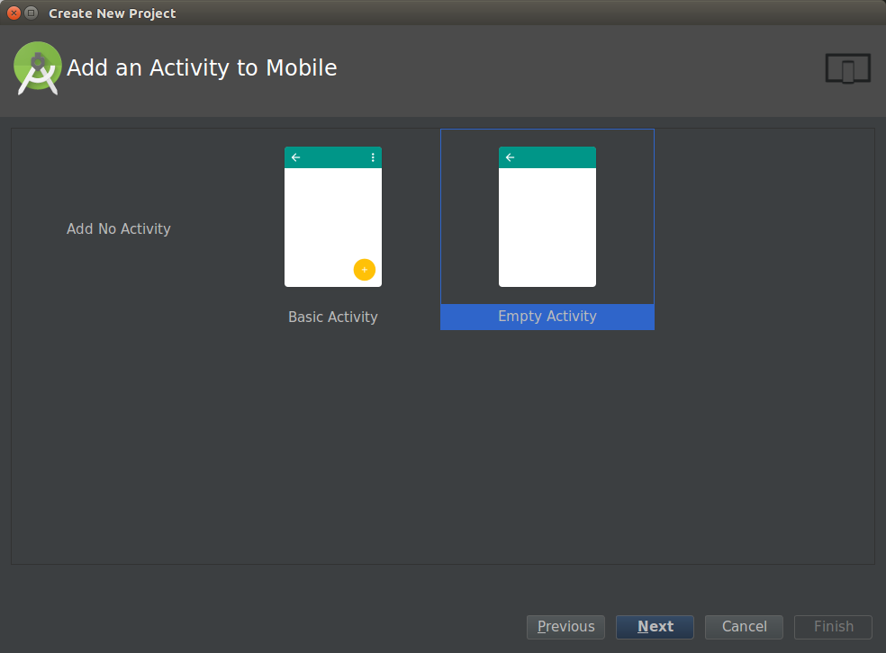
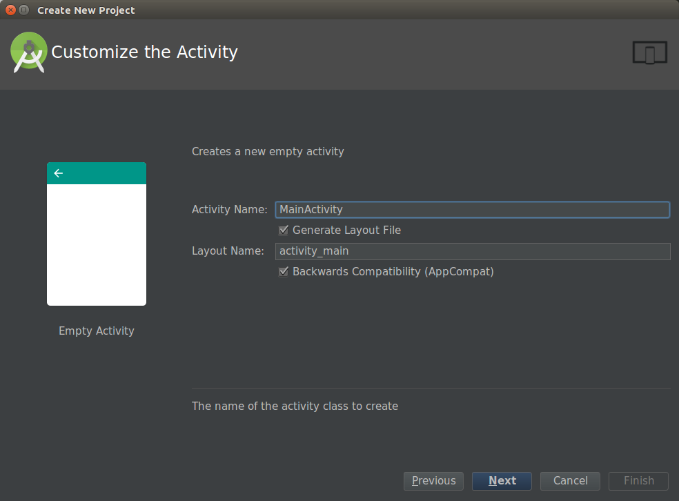
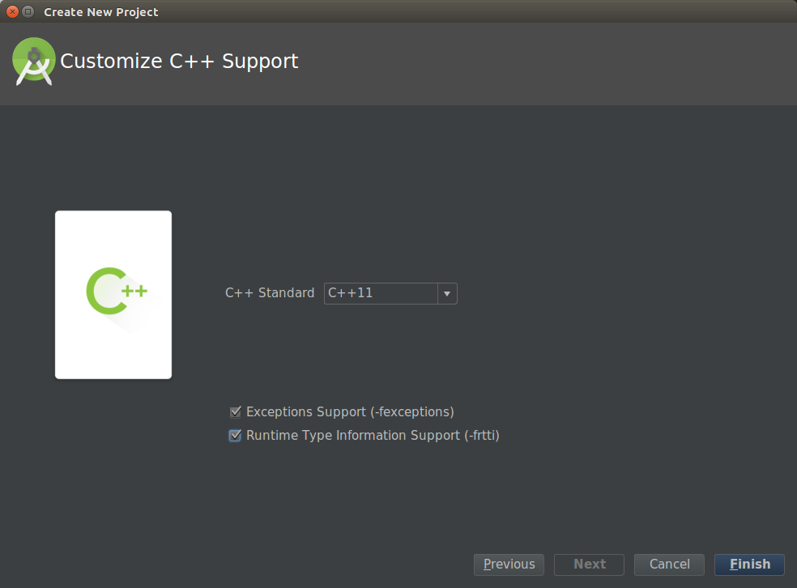
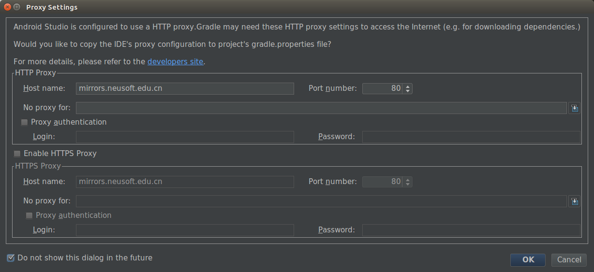

<p> <a href="http://www.ahageek.com/blog/android-develop/android-so/" target="_blank"> Android SO 库开发 </a> </p>
<ol>
    <li>New Project:<br/>
        
    </li>
    <li>Target Android Devices:<br/>
        
    </li>
    <li>Add An Activity to Mobile:<br/>
        
    </li>
    <li>Customize the Activity:<br/>
        
    </li>
    <li>Customize C++ Support:<br/>
        
    </li>
    <li>Proxy Settings:<br/>
        
    </li>
</ol>
